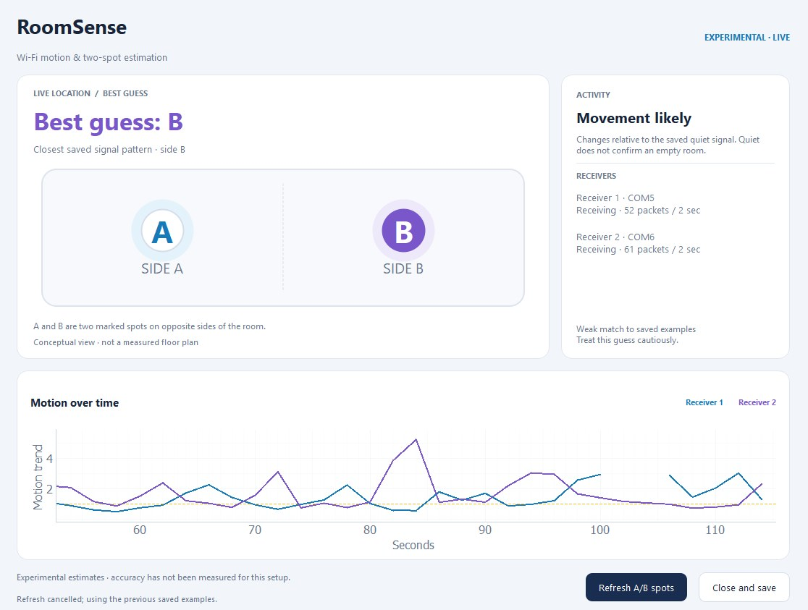
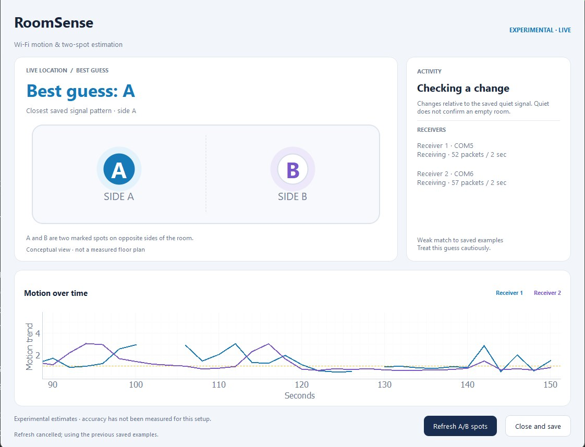
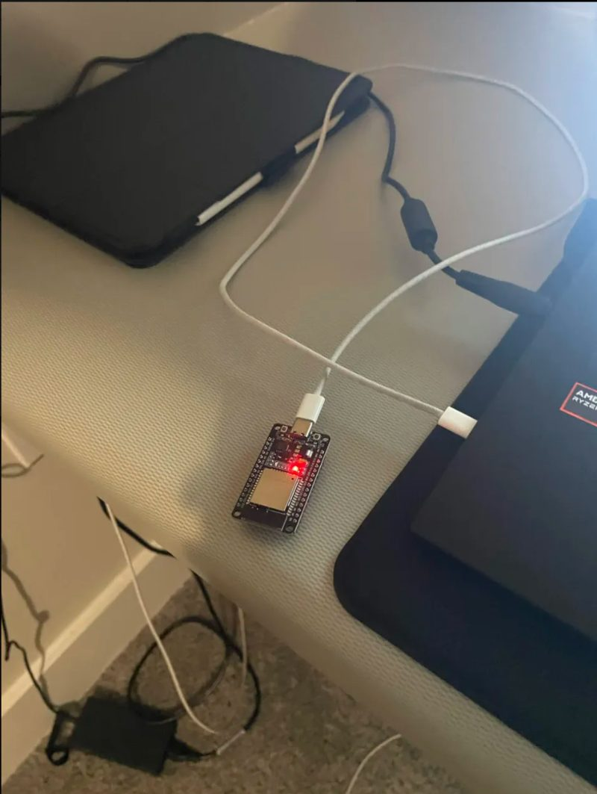
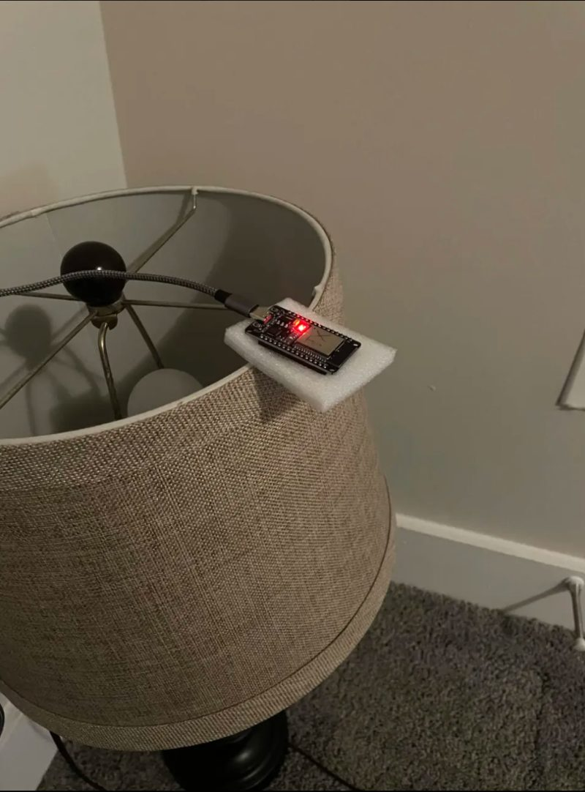
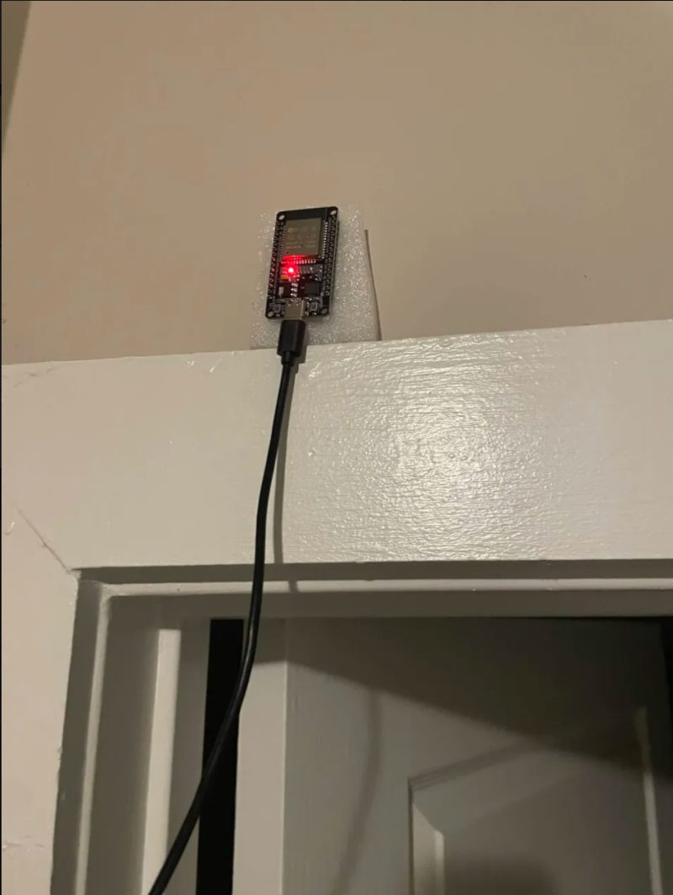

Projects RoomSense
RoomSense
Wi-Fi motion sensing and location estimation. Three ESP32 boards notice when someone moves through a room, and guess which side of it they are on, with no camera and nothing for the person to carry.


The live interface I built, a minute apart. In the first, movement is likely, receiver 2’s motion trend spikes, and the best guess is side B. In the second, the best guess is side A. The graph plots each receiver’s motion trend over time, and the activity panel warns when a guess is only a weak match to the saved examples.
The idea
A Wi-Fi signal does not travel in a straight line. It bounces off walls, furniture and people, so when someone moves, the signal that reaches a receiver changes slightly.
My starting idea was to use inexpensive ESP32 boards to sense a person through those changes. I wanted to detect movement and estimate where someone was, without a camera and without asking them to carry a phone or a tag.
Full indoor positioning is a research problem on its own, so I narrowed the location goal to two marked spots, A and B, on opposite sides of the room. That kept the project small enough to finish while still exploring both halves of the question: is someone moving, and where are they?
- Senses
- Movement, and which of two spots a person is at
- Without
- A camera, or a device on the person
- Cost
- Three ESP32 boards and a laptop
From a radio signal to a guess
Every couple of seconds, the measurements pass through four steps before anything appears on screen.



- TransmitOne ESP32 sends a steady stream of Wi-Fi packets across the room
- ReceiveTwo ESP32 receivers record Channel State Information (CSI) for each packet and send it to the laptop over USB serial
- ProcessPython takes the amplitude of each reading, normalizes it and compares it with a saved quiet signal
- DecideA threshold flags movement, and the closest saved fingerprint gives the A or B guess
How it came together
The project changed shape as I learned what the data could and could not tell me.
-
Set up the hardware
I installed the ESP32 development tools and USB drivers, then flashed firmware onto three boards: one transmitter and two receivers.
-
Collected CSI
I recorded Channel State Information from both receivers and looked at the raw measurements to see what a room full of Wi-Fi actually looks like.
-
Compared still and walking
With Python recording and analysis tools, I compared stretches where I stood still with stretches where I walked, to find a signal that separates the two.
-
Saved location fingerprints
I collected labeled examples at different spots and used their signal patterns as fingerprints to match new readings against.
-
Narrowed to A and B
Three spots gave inconsistent results, so I reduced the scope to two spots on opposite sides of the room.
-
Built the live interface
The final interface shows a live motion graph, highlights its best A/B guess automatically, and has a short reference refresh for when a board is moved.
What worked, and what didn’t
I built a working prototype. Motion sensing held up in testing; location is still an experiment.
Worked
- The boards collect wireless measurements reliably enough to graph live.
- In a controlled test, it told walking apart from stillness, and cleared its alert after I stopped moving.
- It produces an A/B location guess automatically, and says when that guess is a weak match.
Didn’t, yet
- Lost packets and noisy readings left gaps and spikes in the data, which you can see as breaks in the graph.
- Signal patterns drifted. Moving a board meant the earlier calibration no longer described the same setup.
- Location results were inconsistent, so the A/B display is an experimental estimate. I have not measured a dependable accuracy figure.
ECE skills I gained
-
Microcontrollers and firmware
Setting up ESP32 boards, installing drivers, flashing firmware, reading data over USB serial, and arranging wireless hardware for an experiment.
-
Signal processing
Working with amplitude, normalization, noise and threshold calibration to turn raw radio measurements into a motion signal I could trust.
-
Testing a sensor honestly
Comparing saved measurements taught me why a system needs separate training and testing data, and why a graph that changes does not prove the sensor detected the event I meant.
Final thoughts
RoomSense connected two threads I am interested in: Sensing & Exploration, and Signal & Information Processing. The biggest lesson was that collecting wireless data is only the first step. Interpreting it consistently is a separate, harder problem.
It made me want to learn more ESP32 programming and keep improving the two-spot estimator. If I continue, I will test repeated visits to each spot and different body orientations before adding more locations, so that any accuracy number I report is one I can stand behind.
- Status
- Working prototype. Motion sensing works; the A/B guess is experimental.
- Next
- More repeated visits and body orientations, then more spots